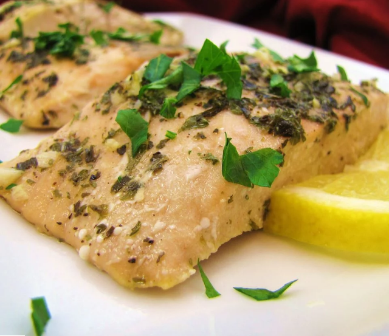

Baked Salmon

Description
No guest will be able to guess how easy this elegant looking
baked salmon recipe actually is. "This is THE BEST salmon I
have ever tried," says user Dianne. "My husband and I have this
at least every other week."
Ingredients
- 2 cloves garlic, minced
- 6 tablespoons light olive oil
- 1 teaspoon dried basil
- 1 teaspoon salt
- 2 (6 ouce) fillets salmon
- 1 tablespoon lemon juice
Steps
- In a medium glass bowl, prepare marinade by mixing
garlic, light olive oil, basil, salt, pepper, lemon juice
and parsley. Place salmon fillets in a medium glass baking
dish, and cover with the marinade. Marinate in the refrigerator
about 1 hour, turning occasionally.
- Preheat oven to 375 degrees F (190 degrees C).
- Place fillets in aluminum foil, cover with marinade, and seal.
Place sealed salmon in the glass dish, and bake 35 to 45
minutes, until easily flaked with a fork.